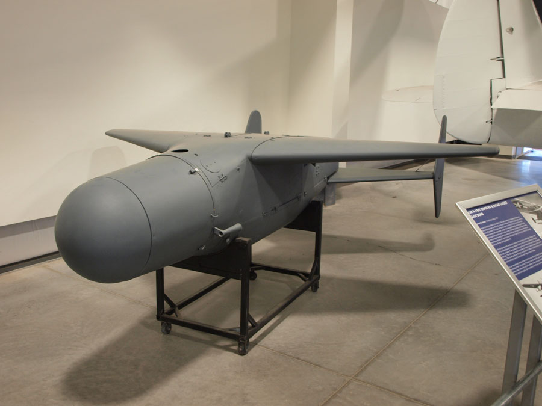
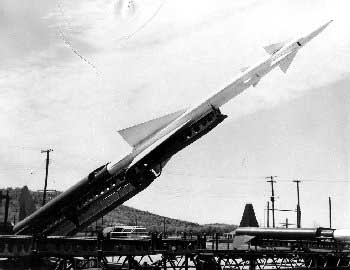
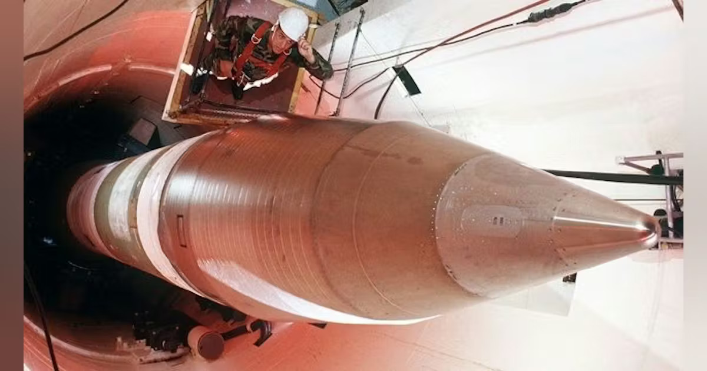
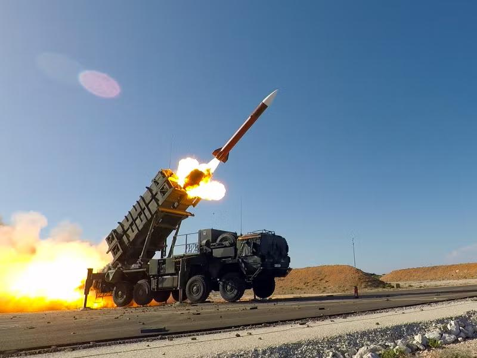
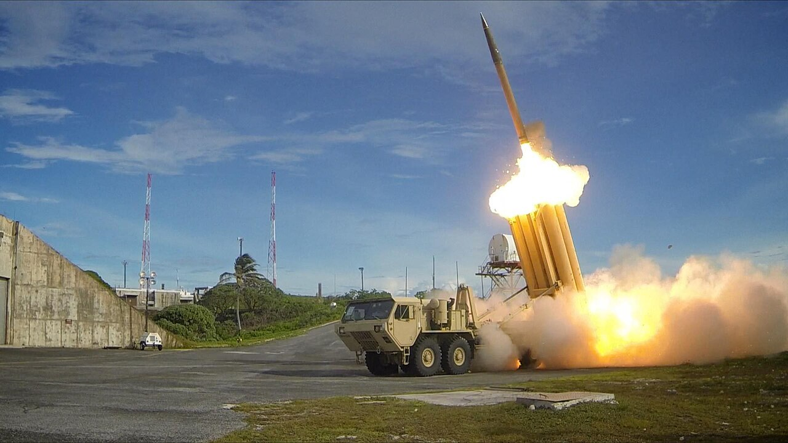
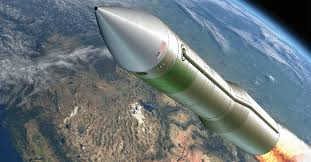

Missile Technology
From early rockets to precision-guided munitions and ICBMs, missile technology has transformed modern warfare with unprecedented range and accuracy.

The evolution of missile systems began during World War II with the introduction of early guided weapons such as the ASM-N-2 Bat. This weapon represented one of the first successful attempts by the United States to create a radar-guided bomb capable of independently striking targets. Unlike traditional unguided bombs, the Bat used onboard radar to adjust its flight path, improving accuracy against enemy ships and moving targets. Although experimental in nature, it marked a major technological shift in how military forces approached precision targeting.
During this early period, most weapons still relied heavily on manual aiming and unguided explosives, making accuracy dependent on pilot skill and environmental conditions. The ASM-N-2 Bat demonstrated the potential for automation in warfare, even though its use was limited in scope and effectiveness. Its development showed that future warfare could rely more on technology than human precision alone.
The introduction of the Bat missile laid the foundation for modern precision-guided weapons. While it was not widely deployed or highly advanced by today’s standards, it proved that guided flight systems were possible. This innovation influenced future missile development programs and set the stage for Cold War missile advancements.

The Ajax missile represents the early Cold War era of rapid missile experimentation and development as the United States sought to modernize its defense systems. During this period, military engineers focused on improving range, speed, and guidance systems to counter emerging aerial and missile threats. The Ajax concept reflected the transition from experimental wartime technology to more structured missile defense systems.
In the early Cold War, missile systems were still evolving, and many designs focused on surface-to-air defense capabilities. The Ajax-era systems demonstrated the growing importance of defending airspace against potential Soviet aircraft and missile attacks. These developments helped establish the foundation for modern integrated air defense networks.
Although early missile systems like Ajax were limited in capability compared to later technology, they played a crucial role in shaping future missile defense strategies. They helped military planners understand the importance of radar tracking, guided interception, and automated defense systems, which became essential in later decades of warfare technology.

The LGM-30 Minuteman II represents one of the most important developments in Cold War missile technology, marking the rise of intercontinental ballistic missiles as a central element of nuclear deterrence. These missiles were designed to deliver nuclear warheads across continents within minutes, fundamentally changing global military strategy. Their existence shifted warfare from battlefield engagements to global strategic deterrence.
During the Cold War, tensions between superpowers led to a focus on rapid-response nuclear systems that could survive a first strike and still retaliate effectively. The Minuteman II featured solid-fuel propulsion, which allowed it to be launched more quickly and reliably than earlier liquid-fueled missiles. This increased readiness made it a key part of the United States’ nuclear defense strategy.
The development of systems like the Minuteman II demonstrated the shift toward mutually assured destruction as a deterrent to large-scale war. These missiles were not designed for battlefield use but rather for strategic balance between global powers. Their presence helped prevent direct conflict while driving rapid advancements in missile accuracy, range, and survivability.

The HIMARS missile system represents a major advancement in modern battlefield mobility and precision strike capability. Unlike earlier large and stationary missile systems, HIMARS is a highly mobile platform mounted on a light vehicle chassis, allowing it to quickly reposition and strike targets with minimal warning. This mobility greatly increases survivability and tactical flexibility in modern combat environments.
In modern warfare, speed and precision are essential, and HIMARS reflects this shift by enabling rapid deployment and accurate long-range strikes. It is capable of launching guided rockets and missiles that can target enemy positions with high precision, reducing collateral damage and increasing effectiveness. This makes it a critical tool for modern military operations.
The system also demonstrates the increasing importance of networked warfare, where targeting information is shared in real time across multiple platforms. HIMARS can receive updated coordinates and strike targets quickly, making it highly effective in fast-moving combat scenarios. This reflects the modern shift toward precision-guided, information-driven warfare.

The THAAD missile system represents a major advancement in defensive military technology, designed specifically to intercept and destroy incoming ballistic missiles. Unlike offensive missile systems, THAAD focuses on protecting military bases, cities, and allied forces from long-range missile threats. It plays a critical role in the modern missile defense strategy imposed by the United States.
As missile technology advanced globally, the need for effective interception systems became increasingly important. THAAD was developed to engage missiles during their terminal phase of flight, using high-speed interceptors to destroy threats before impact. This system significantly improves defensive capabilities against modern ballistic missile attacks.
In the modern era, THAAD is integrated into a larger global missile defense network that includes radar systems and other interception platforms. Its ability to track and destroy incoming threats in real time demonstrates the shift toward layered defense systems. This reflects the growing importance of protection and interception in modern military strategy.

The development of next-generation intercontinental ballistic missiles represents the future of strategic military deterrence. These systems are being designed to replace older Cold War-era missiles with more advanced technology that improves accuracy, survivability, and responsiveness. They continue the role of maintaining nuclear deterrence on a global scale.
Modern advancements in missile technology focus on improving guidance systems, propulsion, and stealth capabilities to ensure effectiveness in highly advanced defense environments. Next-generation ICBMs are expected to be more adaptable and resistant to interception, reflecting ongoing technological competition between offensive and defensive systems worldwide.
These future missile systems highlight the continued importance of strategic deterrence in global security. While they are not designed for battlefield use, they serve as a key element of national defense strategy. Their development shows the ongoing evolution of missile technology toward greater precision, speed, and survivability in an increasingly complex global security environment.